السؤال 2

الجواب الصحيح: 1
هذا العلامة ديال الخطر .
- كتعلم على وجود ممر ديال الراجلين.
25 سؤال
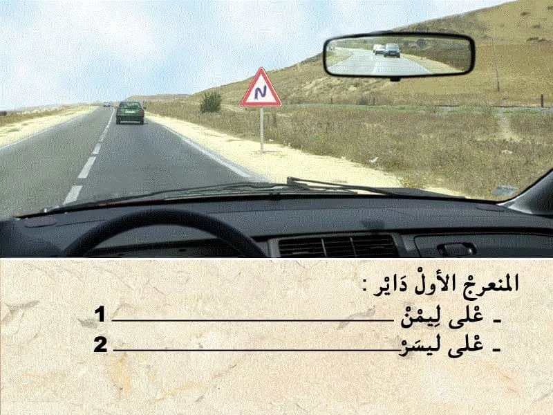
الجواب الصحيح: 1
هذا العلامة . هي علامة ديال الخطر .
- كتعلم على منعرجات متتالية. المنعرج الاول داير على ليمن . و الثاني داير على ليسر .
و بالتالي الجواب الصحيح هو رقم 1.
الجواب الصحيح: 1
هذا العلامة ديال الخطر .
- كتعلم على وجود ممر ديال الراجلين.
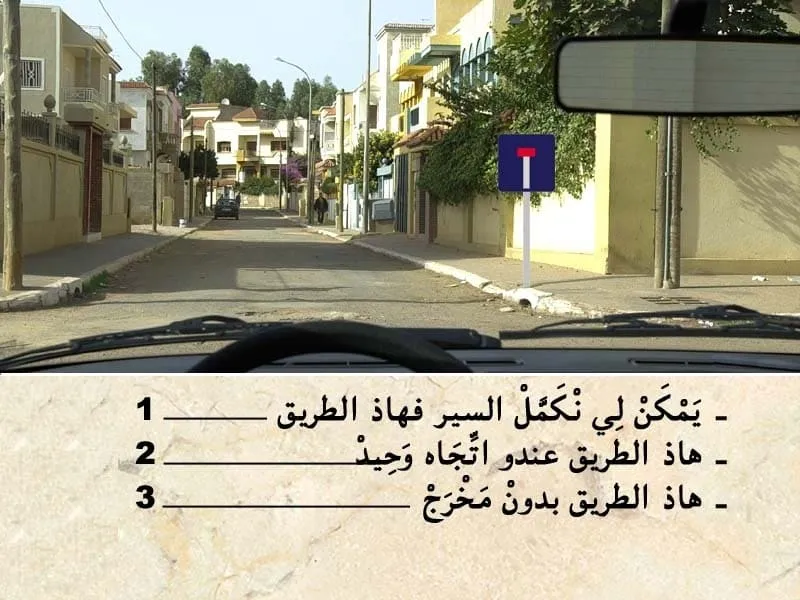
الجواب الصحيح: 1 و 3
هذا العلامة ديال الإرشاد.
- كتعلم على طريق بدون مخرج .
- ✅ في هذا الحالة يمكن لي نكمل السير للقدام . و لكن الطريق بدون مخرج.

الجواب الصحيح: 2
قبل التجاوز . واجب عليا نراقب، تم نبه، تم ننحاز.
في هذا الحالة كاين منعرج و قدامي راكب الدراجة.
- الرؤية قبالتي غير واضحة و بالتالي ما يمكنش لي نتجاوز.
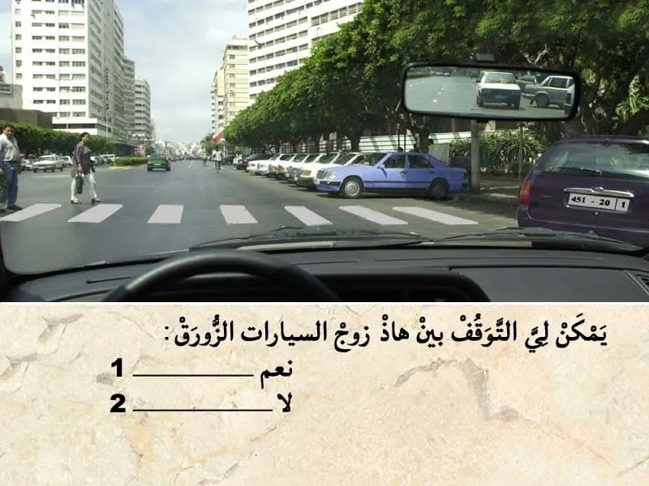
الجواب الصحيح: 2
باش نتوقف خاص يكون المكان كيسمح بالتوقف.
و ما يكونش خاص بشي مصلحة او فئة معينة .
بين هذا السيارات كاين ممر ديال الراجلين و بالتالي ممنوع عليا نوقف او نتوقف فيه.
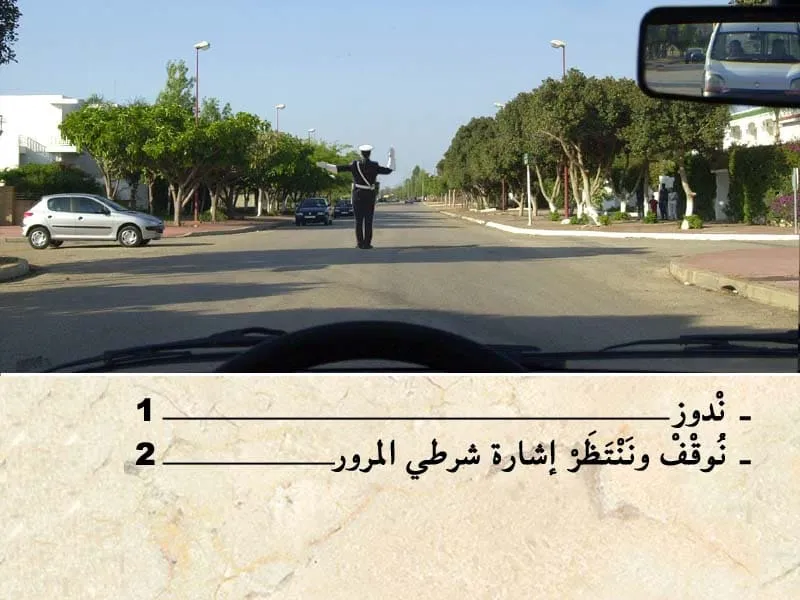
الجواب الصحيح: 2
في ملتقى الطرق مع وجود الشرطي او الدركي .
من الواجب نتبع إشارة شرطي المرور .
في الحالة الشرطي داير للجهة الأخرى و بالتالي واجب عليا نوقف و ننتظر الإشارة ديالوا.

الجواب الصحيح: 2
في هذا الحالة عندي ملتقى الطرق مع ضوء ثلاثي الألوان . و الضوء الأخضر شاعل .
في هذا الحالة واجب عليا ننقص من السرعة في حالة وجود خطر او الا شعل الضوء الاحمر .
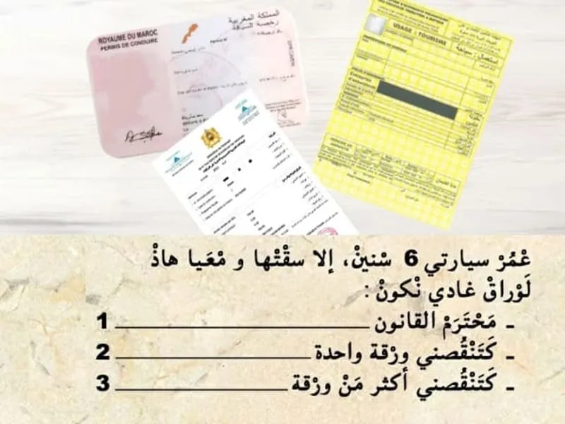
الجواب الصحيح: 3
مجموع الأوراق لي من الواجب نتوفر عليها باش نسوق سيارة :
- رخصة السياقة.
- البطاقة الرمادية.
- شهاذة تأمين.
- الضريبة السنوية.
و في حالة تجاوز العمر ديالها 5 سنين. من الواجب التوفر على :
- شهادة الفحص التقني.
في هذا الحالة العمر ديال سيارتي 6 و بالتالي كتنقصني أكثر من ورقة.
" البطاقة الرمادية و شهادة الفحص التقني".

الجواب الصحيح: 1
مسافة التوقف كيتم حسابها بالعلاقة التالية :
- العشر ديال الصعة مضروب في نفسه . يعني في هذه الحالة :
- السرعة 60 كلم في الساعة .
و بالتالي مسافة التوقف : 6*6=36 متر.
--- يعني الجواب رقم 1.
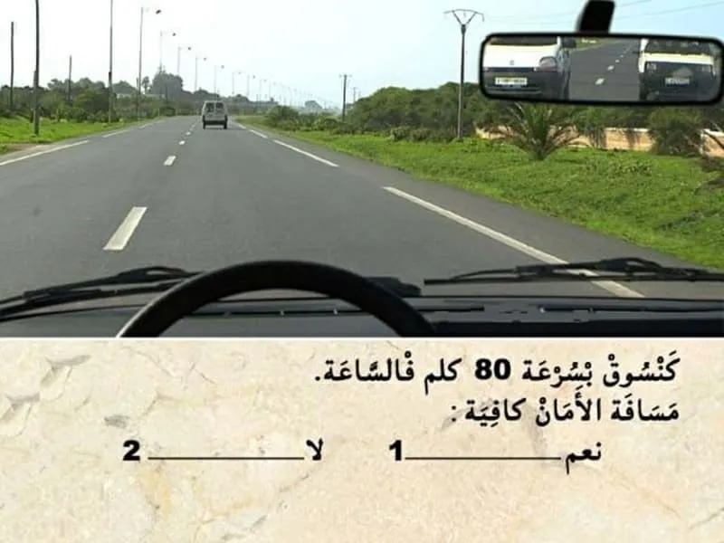
الجواب الصحيح: 1
مسافة الامان هي العشر ديال السرعة مضروب في 6 .
يعني 8*6=48 متر .
في هذا الحالة باش نعرف المسافة الفاصلة غادي نعتمد على الخطوط .
كل خط لي في جنب الطريق طول ديالو 20 متر و بين كل خط و خط 6 متر .
إلا لاحظت في هذا الوضعية عندي 3 دالخطوط . و بالتالي اكثر من 70 متر .
و بالتالي المسافة كافية.
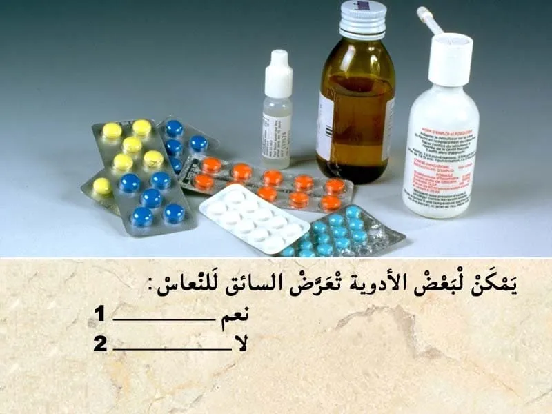
الجواب الصحيح: 1
تتسبب بعض الأدوية المطروحة للصحة العامة للمواطنين في النعاس أو ضعف الرؤية اللذان يتعارضان تماما مع السياقة.
يتم تحديد هذه المخاطر المحتملة من خلال رسم تخطيطي في شكل مثلث صغيرعلى علب الأدوية:
🔺المستوى الأول: لا تُمنَع السياقة ولكن يجب قراءة التعليمات والتوصيات قبل الإستعمال.
🔺المستوى الثاني: يتعلق بالمواد التي لا ينصح بتناولها أثناء السياقة دون استشارة طبية.
🔺المستوى الثالث: يجب عدم تناول هذه الأدوية مطلقا قبل السياقة.
💡 يمكن أن تتسبب معظم الأدوية في آثار جانبية أكثر أو أقل خطورة، لذلك وقبل الشعور بها، خاصة أثناء السياقة، يكون من الأفضل الرجوع إلى قائمة الآثار الجانبية المدرجة على العلبة أو النشرة المرفقة بهذا الدواء.

الجواب الصحيح: 1
عدم احترام فترة الراحة. كتعتبر جنحة. و من الواجب القيام ب استراحة كل ساعتين ديال السياقة.
او في حالة الشعور بالنعاس.
حيت كيشكل خطر ديال وقوع حوادث السير.
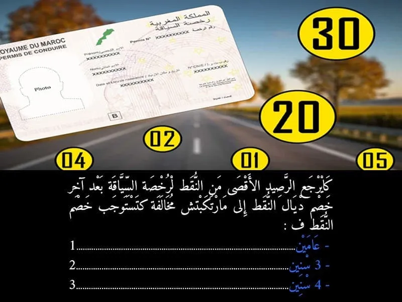
الجواب الصحيح: 2
يسترجع السائق مجموع الرصيد ( 30 نقطة ) إذا لم يرتكب السائق مخالفة معاقب عليها بخصم النقط خلال مدة ثلاث سنوات.

الجواب الصحيح: 1 و 4
التشوير الطرقي كيضم:
- اسهم بالازرق ، كتعلم على منعرج خطير على ليسر .
- علامة المنع . كتمنع السير بأكثر من 40 كلم في الساعة.
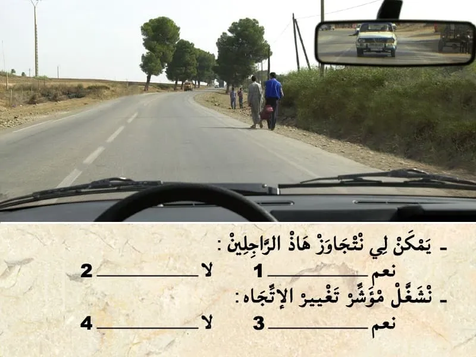
الجواب الصحيح: 1 و 3
في هذا الوضعية كاين راجلين على جنب الطريق. و بالتالي واجب عليا نخلي مسافة امان جانبية كافية ديال 1 متر على الأقل. و نتجاوز .
في هذا الحالة ما عندي حتى مانع باش نتجاوز و بالتالي يمكن لي نشغل مؤشر تغيير الإتجاه.
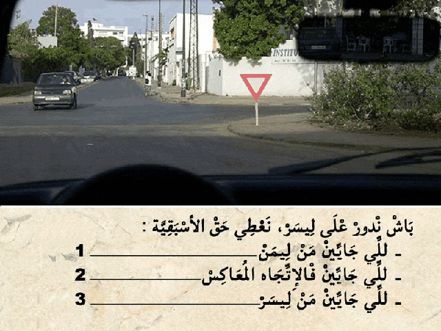
الجواب الصحيح: 1 و 2 و 3
هذا العلامة ديال اعطاء حق الأسبقية. كتعلم بلي واجب عليا نعطي حق الأسبقية في هذا ملتقى الطرق .
✏️ و بالتالي واجب عليا نعطي حق الأسبقية للي جاي من جهت ليمن .
✏️و للي جاي من جهت ليسر .
و حتى للي جاي في الإتجاه المعاكس في حالة كنت غادي ندور على ليسر.
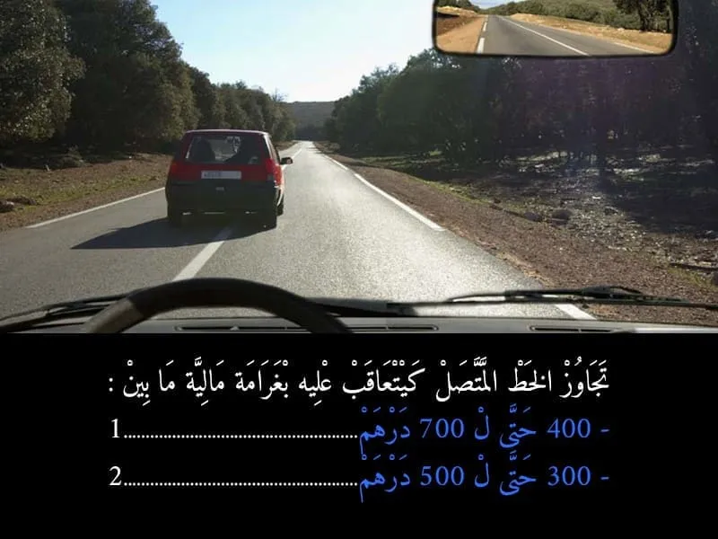
الجواب الصحيح: 1
تجاوز الخط المتاصل كيتعتبر مخالفة من الدرجة الاولى. و لا يتم خصم نقاط من رصيد رخصة السياقة . و غرامة مالية 700 درهم .
- في حالة اداء الغرامة في اجل 24 ساعة كيأدي السائق لي ارتكب المخالفة 400 درهم .
- أما في حالة الاداء في اجل 15 يوم فثمن الغرامة هو 500 درهم .
- أما في حالة عدم الادء في اجل 15 كتصبح الغرامة 700 درهم .
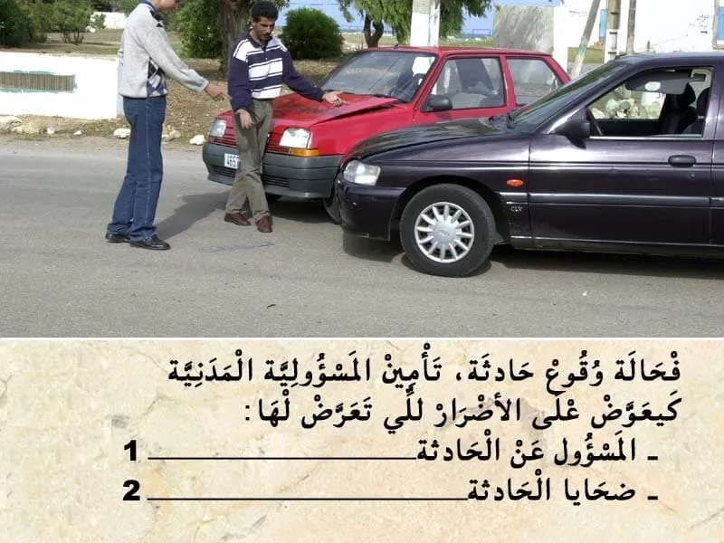
الجواب الصحيح: 2
تأمين المسؤلية المدنية لي هو التأمين الأدنى الإجباري .
في حالة كنت مسؤول على حادثة . التأمين ديالي كيعوض "المسؤلية المدنية" غيعوض الأضرار للي وقعات للسيارة الاخرى ضحية الحادثة.
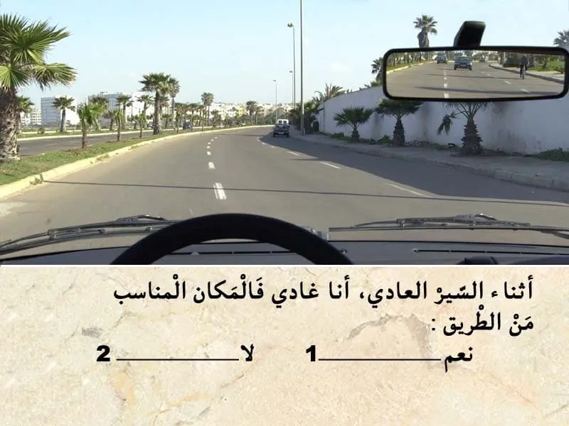
الجواب الصحيح: 2
الطريق في الغالب كتكون مقصمة لمسالك .
في حالة الطريق لي عنده اتجاه وحيد كيكون مسلك للسير العادي و مسلك للتجاوز .
و في السير العادي من الواجب عليا نكون في المسلك لي على ليمن ديال الطريق .
اما المسلك الثاني يمكن لي نستعملوا فقط للتجاوز.
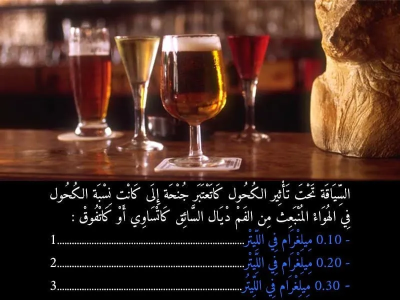
الجواب الصحيح: 1
السياقة تحت تأثير الكحول كتعتبر جنحة الا تجاوز نسبة الكحول في الهواء لي خارج من الفم 0.10 غ في الليتر.و كيتم خصم 6 نقاط . و يتم إقاف المركبة.
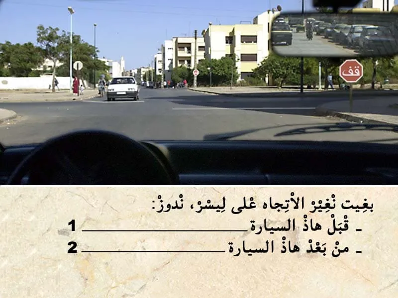
الجواب الصحيح: 2
في حالة منين نبغي نغير الإتجاه ليسر . كيكون واجب عليا نعطي حق الأسبقية للي جاي في الإتجاه المعاكس .
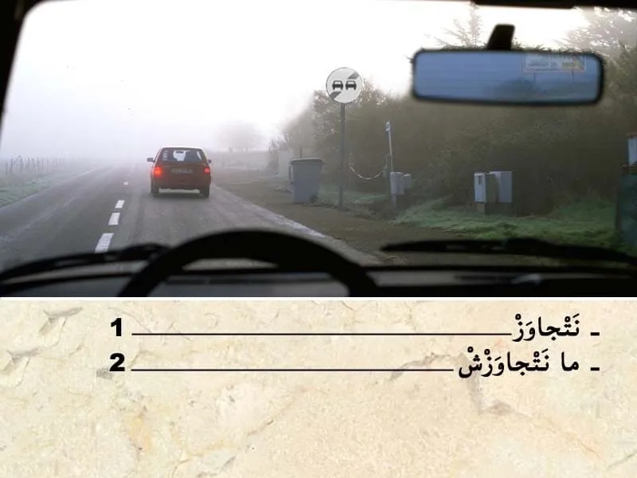
الجواب الصحيح: 2
قبل التجاوز . واجب عليا نراقب، تم نبه، تم ننحاز.
في هذا الحالة كاين الضبابة ،يعني الرؤية غير واضحة قدامي . رغم وجود ديال علامة نهاية منع التجاوز. و لكن المانع هنا هو الضبابة .
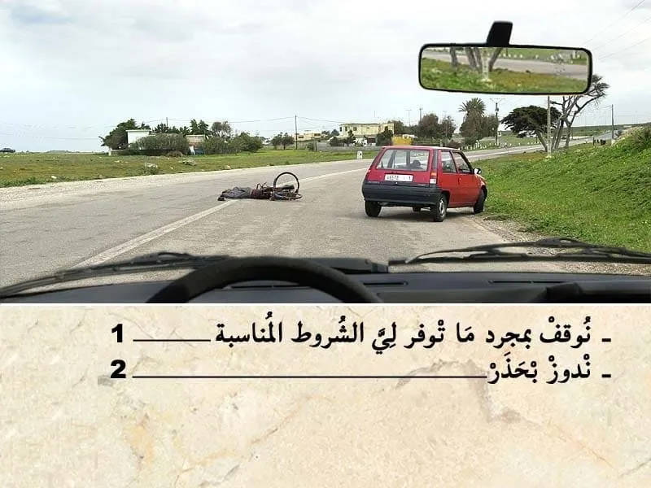
الجواب الصحيح: 1
منين نلقى حادثة و ما تكونش رجال الاسعاف في عين المكان من الواجب عليا نوقف و نقدم الإغاثة بمجرد ما توفر لي الشروط المناسبة .
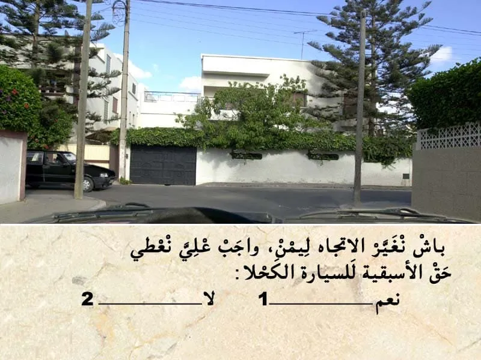
الجواب الصحيح: 2
في غياب التشوير الطرقي .
في ملتقى الطرق كروازمة حق الأسبقية للي جاي من ليمن . للي ليمن ديالوا خاوي يدوز هو الأول
و بالتالي انا لي عندي حق الأسبقية .
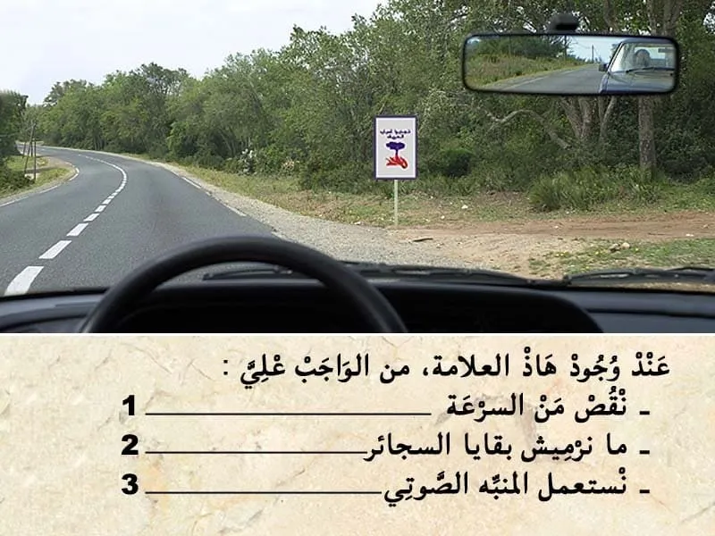
الجواب الصحيح: 2
هذا العلامة ديال الإرشاد.
كتعلم على خطر اندلاع حريق في هذا الغابة . واجب عليا ناخد جميع الاحتياطات لي ممكن تأدي الى اندلاع حريق في هذا المجال الغابوي.
⛔ مثل عدم رمي بقايا السجائر.